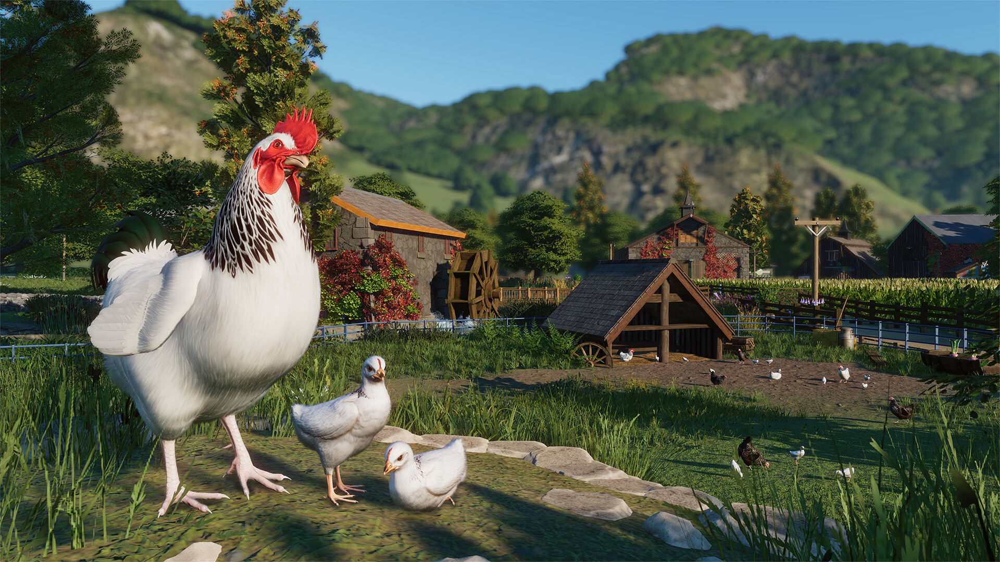
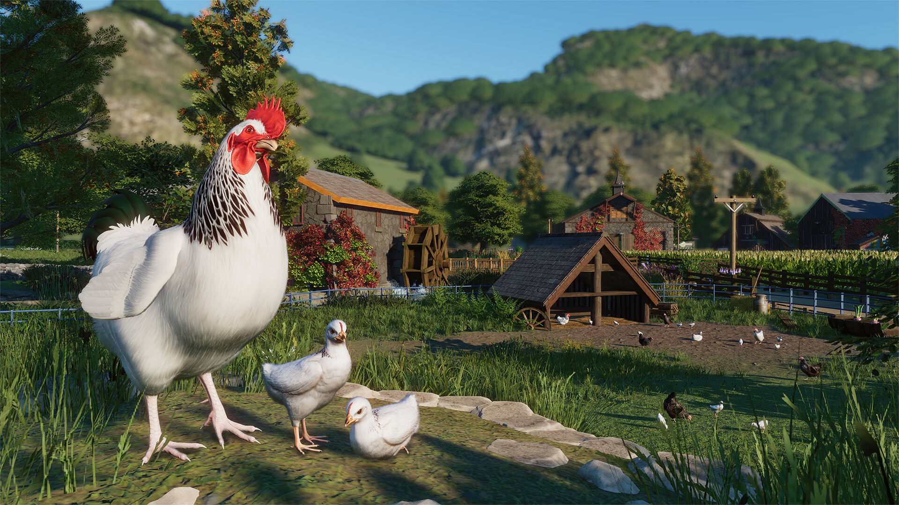

Barnyard & Zookeepers Bundle
Data wydania: 14 maja 2025
Cena pakietu: 69.99 zł
Oficjalny zwiastun Barnyard & Zookeepers Bundle
Przedstawiamy pakiety Planet Zoo: Pakiet Gospodarstwo i Właściciele zoo! Przekonaj się, ile uroku ma w sobie wieś, i obdaruj nim swoje zoo, albo zasznuruj robocze buty, aby odpowiednio się przygotować do stworzenia doskonałego zoo pełnego
niepowtarzalnych zwierząt.
Galeria zdjęć


 



O tym DLC
Pełna lista obejmuje następujące zwierzęta: bydło rasy highland, kura rasy sussex, koza alpejska, alpaka, amerykański osioł zwyczajny, owca rasy hill radnor, świnia rasy tamworth, manul stepowy, pawian płaszczowy, markur, andoniedźwiedź okularowy, żółw pustynny, dikdik sawannowy i sifaka biało-kasztanowa.
Ponad 155 nowych, fantastycznych elementów scenerii
Wprowadź czarujący, wiejski klimat do swojego zoo – zrób ławki ze snopków siana, na których goście będą mogli usiąść i nacieszyć się widokami, lub postaw stoły z odzyskanych bębnów kablowych, przy których usiądą i coś przekąszą. W tym pakiecie znajdziesz również kilka uroczych ogrodzeń i bram, a także klasyczne żeliwne pompy do wody, studnie, wiatraki, wiatrowskazy i roślinność, która wspaniale urozmaici wybieg. Ta i wiele innych scenerii z pewnością sprawią, że goście poczują zew natury, gdy zachęcisz ich do odkrywania ponadczasowego uroku wiejskich krajobrazów. Udoskonal swoje zoo dzięki nowym elementom scenerii i zbuduj zapierające dech w piersiach przystanie dla gości i zwierząt. Ciesz się wspólnie ze swoimi gośćmi, gdy będą wpatrywać się w pionowe ozdobne struktury kwiatowe, przyciągające wzrok chorągiewki i cudowne markizy, które z pewnością zrobią na nich ogromne wrażenie. Dodaj uroku i funkcjonalności dzięki różnym latarniom, które oświetlą parki, idealnie rozmieszczonym ławkom piknikowym dla gości, aby umożliwić im zjedzenie przekąsek, oraz dodatkowym miejscom siedzącym na odpoczynek między wybiegami zwierząt. Ta sceneria i inne elementy z pewnością stworzą żywą i przyjazną atmosferę, która wszystkich zachwyci i zainspiruje.
2 nowe, pasjonujące scenariusze
Wybierz się w podróż, podczas której tchniesz nowe życie w zaniedbane gospodarstwo. Połącz siły z powracającą Tiffany Summers, aby stworzyć wspaniały azyl dla zwierząt. Zmień zniszczone stodoły i zapomniane pastwiska w bezpieczne i przyjazne miejsce dla zwierząt – w prawdziwy dom! Zobacz, ile radości możesz czerpać z odbudowywania i odnawiania gospodarstwa pośród rozległych pól smaganych delikatnym wiatrem na nowozelandzkiej wsi.
Witamy na imprezie! Wciel się w rolę życia i pomóż zespołowi Planet Zoo w przygotowaniach do świętowania 5. rocznicy premiery w znanym na całym świecie Zoo Frontier! Jako ważny członek komitetu organizującego imprezę pomożesz powracającej do serii postaci, Emmie Goodwin, w przygotowaniach do niezapomnianej imprezy, która zapisze się na kartach historii Planet Zoo. Twoim zadaniem jest przygotowanie, zarządzanie i zadbanie o idealną imprezę w Zoo Frontier, aby wszyscy goście i zwierzęta miło spędzili czas. Obserwuj, jak radość niesie się wśród malowniczych wiejskich pól.